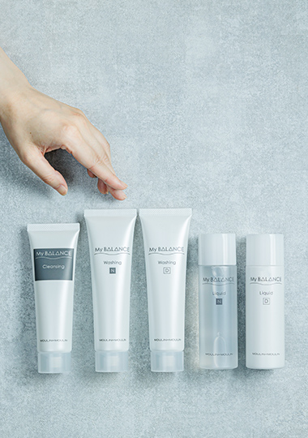

肌が整うと、毎日が楽しい
なりたいキレイを叶えることで、自信が芽生え、心も前向きになります。
美しさへの近道は、自分の肌状態を知り、自分に合ったスキンケアを知ること。
そうすることで、肌はしっかりとこたえてくれます。
さあ、自分の肌を信じよう


一人ひとりの肌に寄り添う
私たちは美しさを提案する美容メーカーとして、
一人ひとりの 「キレイ」と向き合ってきました。
その中で、毎日をがんばっている人の肌に目を向けると、
不規則な生活や環境からくるストレスによって、
自分でも気づかないうちに、バリア機能が低下した
“ゆらぎ肌”※の方が多いことが分かりました。
マイバランスは、そんなゆらぎ肌の方にもご使用いただけるご提案と、
商品設計にこだわり、あなたの「肌が整うと毎日が楽しい」を応援します。
※バリア機能が低下し、不安定な状態の肌
